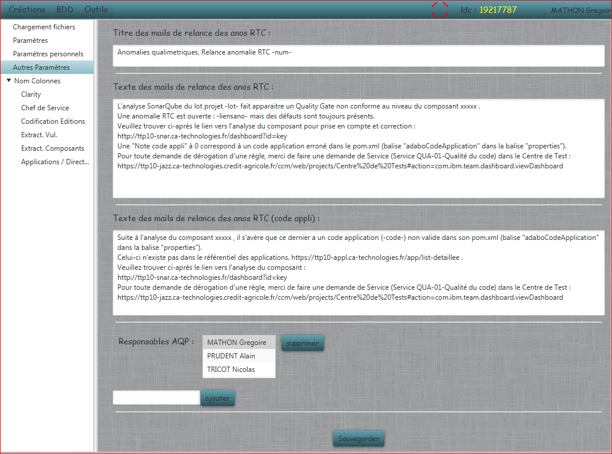

Autres Paramètres
Permet de modifier les paramètres texte et liste de l'application :

- Titres et Textes : Correspond à tous les titres, descriptions, et textes utilisés par l'application pour la création de mails et d'anomalies
selon les cas d'utilisation.
- Listes : Correspond aux listes de données ou d'utilisateurs nécessaires à certaines fonctionnalités.
Tous les paramètres sont sauvegardés dans un fichier proprietes.xml à la racine de l'application.